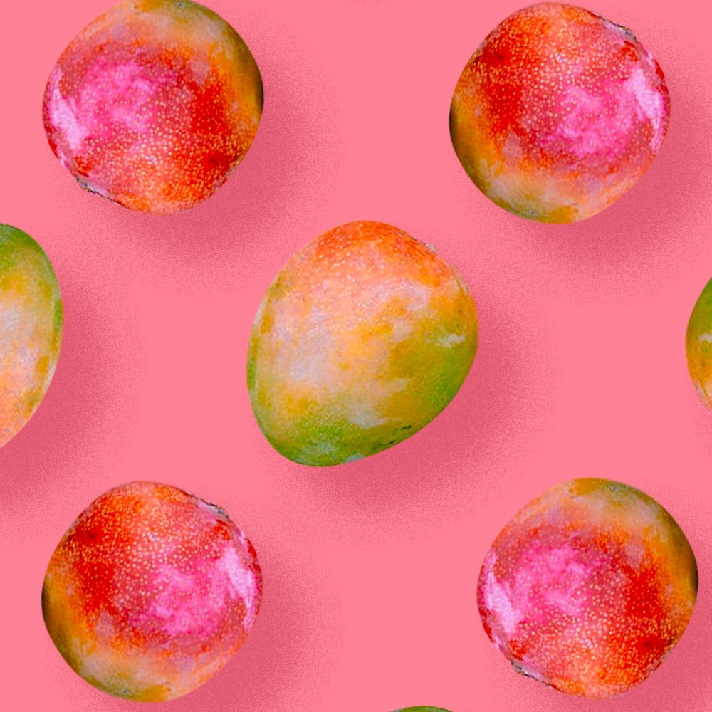

El desperdicio de frutas puede evitarse, e incluso convertirse en un valioso recurso. Así lo demuestra la empresa holandesa Fruitleather Rotterdam, que nace del equipo de dos jóvenes diseñadores con una pasión por crear valor a las cosas que han sido etiquetadas como inútiles. Juntos desarrollaron un sistema revolucionario para transformar los mangos desechados en un material similar al cuero vegano, y este ya se está comercializando a diseñadores de todo el mundo.
En un contexto en el que se desperdician alrededor de 1.300 millones de toneladas de alimentos anualmente en todo el mundo, es crucial buscar soluciones sostenibles. Aproximadamente el 45% de la producción de frutas destinada al consumo se descarta. Al mismo tiempo, la industria del cuero se posiciona como una de las más perjudiciales para el medio ambiente, siendo responsable del 10% de las emisiones globales de carbono y sacrificando a más de mil millones de animales cada año.
Fruitleather Rotterdam, sin embargo, ve en este panorama una oportunidad única. Cambiando la perspectiva y considerando los desechos de frutas como un valioso material de partida, esta empresa busca marcar la diferencia. No solo reducen significativamente el desperdicio de alimentos, sino que también ofrecen una alternativa sostenible y amigable con los animales para reemplazar al cuero tradicional.
Este material versátil derivado de frutas tiene el potencial de transformarse en calzado elegante, accesorios de moda vanguardistas, tapicería innovadora, muebles sofisticados y mucho más. Las posibilidades creativas y prácticas son realmente infinitas. Al elegir productos fabricados con Fruitleather, se está apoyando un futuro más verde y basado en la biología, contribuyendo a la construcción de una economía circular y sostenible. Bindi te invita a ser parte de esta importante misión. Juntos podemos revolucionar la industria del cuero contaminante y forjar un futuro más sostenible, eligiendo opciones más conscientes y éticas, y promoviendo un movimiento global hacia un mundo sin desperdicio de frutas.
¿Qué estás haciendo hoy con tus desperdicios de fruta? Contribuir con estas industrias innovadoras es una excelente manera de aprovecharlos.